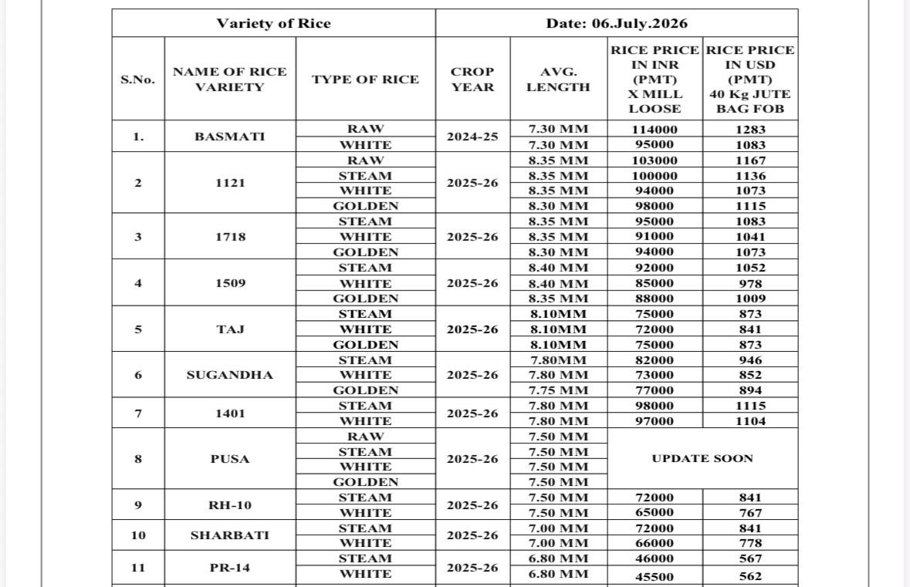

This price list helps wholesale, export and private-label buyers compare current commercial positions before requesting a product-specific quote.
Current indicative rice prices
The table is written as crawlable text so buyers and search engines can read each variety, processing type, crop year, grain length and price. “Update soon” is shown where the supplied rate sheet did not include a current figure.
| Rice variety | Type | Crop year | Average length | INR PMT, ex-mill loose | USD PMT, 40 kg jute bag FOB |
|---|---|---|---|---|---|
| Basmati | Raw | 2024-25 | 7.30 mm | ₹114,000 | $1,283 |
| Basmati | White | 2024-25 | 7.30 mm | ₹95,000 | $1,083 |
| 1121 | Raw | 2025-26 | 8.35 mm | ₹103,000 | $1,167 |
| 1121 | Steam | 2025-26 | 8.35 mm | ₹100,000 | $1,136 |
| 1121 | White | 2025-26 | 8.35 mm | ₹94,000 | $1,073 |
| 1121 | Golden | 2025-26 | 8.30 mm | ₹98,000 | $1,115 |
| 1718 | Steam | 2025-26 | 8.35 mm | ₹95,000 | $1,083 |
| 1718 | White | 2025-26 | 8.35 mm | ₹91,000 | $1,041 |
| 1718 | Golden | 2025-26 | 8.30 mm | ₹94,000 | $1,073 |
| 1509 | Steam | 2025-26 | 8.40 mm | ₹92,000 | $1,052 |
| 1509 | White | 2025-26 | 8.40 mm | ₹85,000 | $978 |
| 1509 | Golden | 2025-26 | 8.35 mm | ₹88,000 | $1,009 |
| Taj | Steam | 2025-26 | 8.10 mm | ₹75,000 | $873 |
| Taj | White | 2025-26 | 8.10 mm | ₹72,000 | $841 |
| Taj | Golden | 2025-26 | 8.10 mm | ₹75,000 | $873 |
| Sugandha | Steam | 2025-26 | 7.80 mm | ₹82,000 | $946 |
| Sugandha | White | 2025-26 | 7.80 mm | ₹73,000 | $852 |
| Sugandha | Golden | 2025-26 | 7.75 mm | ₹77,000 | $894 |
| 1401 | Steam | 2025-26 | 7.80 mm | ₹98,000 | $1,115 |
| 1401 | White | 2025-26 | 7.80 mm | ₹97,000 | $1,104 |
| Pusa | Raw | 2025-26 | 7.50 mm | Update soon | Update soon |
| Pusa | Steam | 2025-26 | 7.50 mm | Update soon | Update soon |
| Pusa | White | 2025-26 | 7.50 mm | Update soon | Update soon |
| Pusa | Golden | 2025-26 | 7.50 mm | Update soon | Update soon |
| RH-10 | Steam | 2025-26 | 7.50 mm | ₹72,000 | $841 |
| RH-10 | White | 2025-26 | 7.50 mm | ₹65,000 | $767 |
| Sharbati | Steam | 2025-26 | 7.00 mm | ₹72,000 | $841 |
| Sharbati | White | 2025-26 | 7.00 mm | ₹66,000 | $778 |
| PR-14 | Steam | 2025-26 | 6.80 mm | ₹46,000 | $567 |
| PR-14 | White | 2025-26 | 6.80 mm | ₹45,500 | $562 |
PMT means per metric ton. Type labels and currency values are reproduced from the supplied rate sheet. Confirm the exact processing specification, FOB port, currency basis and order terms in the final quotation.
How to read the price list
INR mill rate
The INR column shows the supplied loose ex-mill rate per metric ton. Loading, packaging, transport and taxes may change the delivered amount.
USD FOB rate
The USD column shows the supplied rate per metric ton for 40 kg jute bag FOB supply. Confirm the port, shipment size and applicable terms.
Grain and crop
Average length and crop year help define the commercial position, but the final order should also state broken tolerance, moisture, cooking and other quality limits.
Why the final quotation can differ
Rice is an agricultural and specification-led product. Crop availability, ageing, milling yield, processing style, quality limits, order size, bag material, printing, inland freight, port charges, exchange rates and payment terms can all affect the final offer.
For the fastest confirmation, send the variety, processing type, metric tons, packaging, destination, required timeline and any fixed quality limits.

Questions about the rice price list
Are these final rice prices?
No. These are indicative mill rates dated 6 July 2026. A final quotation depends on the variety, processing type, crop, quality specification, quantity, packaging, destination, payment terms and delivery schedule.
What does PMT mean in the rice price table?
PMT means per metric ton. The INR column is the rate-sheet value for loose ex-mill rice, while the USD column is the rate-sheet value for 40 kg jute bag FOB supply.
Which FOB port is included in the USD rice price?
The supplied rate sheet does not name a port. Share the destination and required port so the final quotation can state the applicable FOB basis and logistics terms.
What do White and Golden mean in this price list?
White and Golden are reproduced exactly as written in the supplied mill rate sheet. Confirm the required processing specification with UrbanFresh before placing an order.
How often are the rice prices updated?
This page keeps one permanent URL and is updated when a new approved mill rate sheet is available. Always check the visible rate date before using the figures.